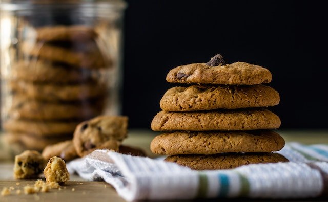

Description
A peanut butter cookie is a flat, crunchy cookie made with peanut butter as the main ingredient. It is characterized by a strong peanut flavor, crumbly texture, and typical surface fork marks
Ingredients
- ½ cup shortening
- ½ cup crunchy peanut butter
- ½ cup white sugar
- ½ cup packed brown sugar
- 1 large egg
- 1 ¼ cups all-purpose flour, plus more as needed
- ¾ teaspoon baking soda
- ½ teaspoon baking powder
- ¼ teaspoon salt
Steps
- Cream shortening, peanut butter, and both sugars in a large bowl with an electric mixer until light and fluffy. Beat in egg until incorporated. Mix flour, baking soda, baking powder, and salt in a separate bowl; gradually stir into peanut butter mixture until combined. Cover and refrigerate dough for at least 1 hour.
- Preheat the oven to 375 degrees F (190 degrees C).
- Roll chilled dough into walnut-sized balls and place 2 inches apart onto baking sheets. Flatten dough balls with a fork dipped in flour to form a crosswise pattern.
- Bake in the preheated oven until edges are set, 10 to 12 minutes. Transfer cookies to a wire rack to cool completely.